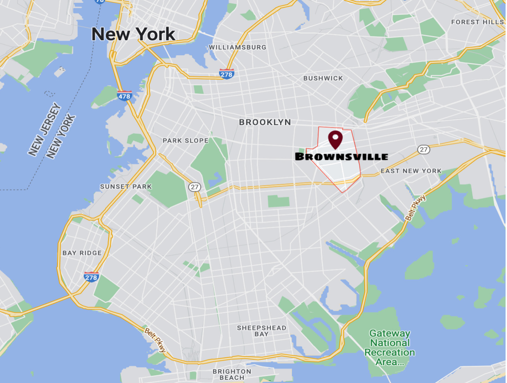
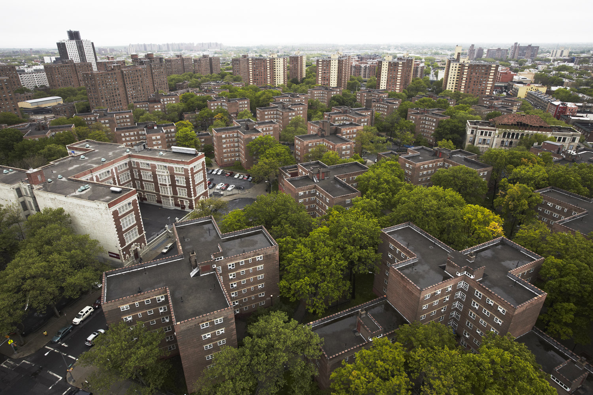
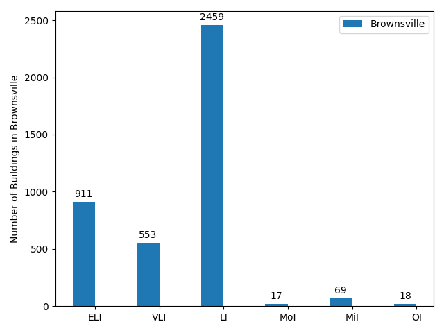
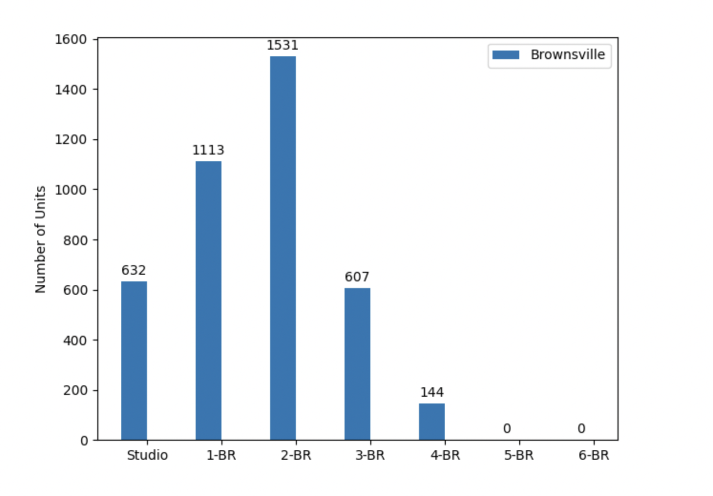
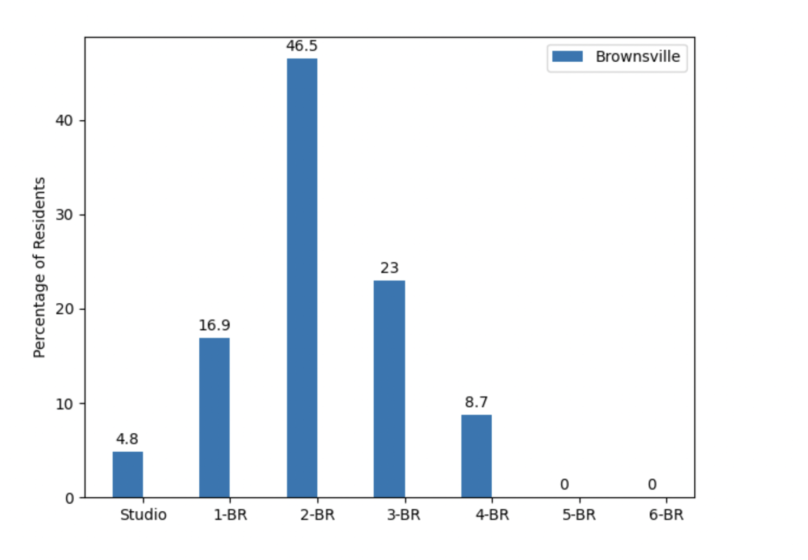
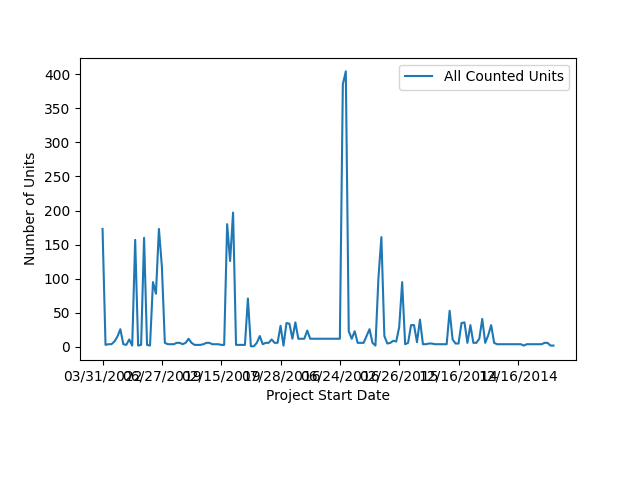
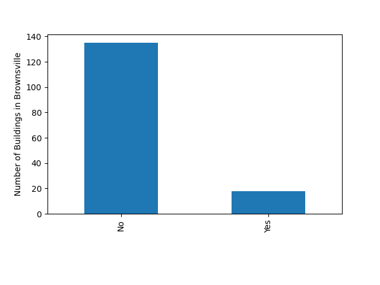

Affordable Housing in Brownsville, Brooklyn
Celine Glennon,
HC1 (Fall 2022)
HC2 - Brownsville Summary and Statistics:
Neighborhood
Introduction:
Brownsville is a neighborhood in
East Brooklyn. Brownsville is home to 75,605 residents (as of the 2019 U.S.
Census), with a relatively high population density of 49,132.89 people per
square mile. 76.31% of residents are Black, while 19.2% are Hispanic. Less than
5% of residents are of another race. Over a third of Brownsville’s residents
were born overseas, with 15% of this group having immigrated to the United
States in the last decade. Brownsville’s demographics, combined with that of
Prospect Heights, Sunset Park, and Sheepshead Bay (the other three selected
neighborhoods in our borough, all of whom have predominantly white and/or
Hispanic populations), contribute to a holistic representation of Brooklyn’s
overall population.
Brownsville is Brooklyn’s poorest
neighborhood. Brownsville’s median household income is approximately $26,500.
34.41% of residents live at or below the federal poverty level (including 40%
of all children in the neighborhood). Less than 15% of residents have a
bachelor’s degree; Though 75% have graduated from high
school. 85% of Brownsville residents are employed.
Though Brownsville’s median gross
rent (i.e., the estimated monthly cost of rent and utilities) was $942 in 2019,
37.7% of Brownsville’s households are still “severely rent-burdened”, meaning
that they spend more than 50% of their income on rent. An additional 24.2% of
households belong to the “moderately rent-burdened” category, in which they
spend over 30% of their income on rent.
Brownsville’s primary ZIP code is
11212. The neighborhood is home to America’s most dense collection of public
housing. Brownsville features 35,326 housing units, of which roughly 10% of
them are vacant (~3,500). 91.16% of Brownsville’s housing structures are
multi-unit (a category that includes both apartments and multi-family homes).
Similarly, most Brownsville housing units are rentals (and not available for
sale).
In Brownsville, roughly 2,700 units
across 563 properties are subsidized in some manner. 48 of these properties are
specifically designated for public housing. However, 1,300 of these units could
expire from rental assistance programs by 2027. This development would further
jeopardize the home-security of Brownsville residents, especially amongst the
most impoverished households. Furthermore, 64% of Brownsville’s privately-owned
rentals received housing code violations in 2019, diminishing the availability
of affordable, safe housing in the neighborhood. Thus, Brownsville demonstrates
a clear need for additional affordable housing infrastructure in the
neighborhood.
Sources:
“ZCTA5 11212.” Social Explorer Profiles, https://www.socialexplorer.com/profiles/essential-report/zcta5-11212.html
“Brownsville
Neighborhood Profile.” NYU Furman Center, https://furmancenter.org/neighborhoods/view/brownsville


HC3 - Neighborhood Rankings Summary:
Our group concluded that walkability, cost of living, and low crime / safety rates would be the most important factors for us in determining the most advantageous locations for affordable housing. These categories were largely inspired by Niche.com’s ranking criteria, which we decided to be the most holistic and well-rounded amongst the dozens of neighborhood ranking websites on the web.
According to Niche’s “commute” category, which we are using as a metric for a neighborhood’s walkability and access to public transportation, Brownsville ranks in fourth place amongst our neighborhoods with a B-grade. Prospect Heights (A-), Sunset Park (A-), and Sheepshead Bay (B+) are all considered to be more walking-friendly areas.
Brownsville also ranked as the least safe out of these four Brooklyn neighborhoods, receiving a C- rating. Prospect Heights received a B-, while Sheepshead Bay and Sunset Park received C+ and C grades, respectively.
Brownsville is considered to be the most affordable of these neighborhoods though, as it received a C grade in terms of its cost of living. However, Prospect Heights, Sheepshead Bay, and Sunset Park all ranked very similarly at a C-. Curiously, Prospect Heights and Brownsville were graded quite similarly on this metric, considering Prospect Heights is one of Brooklyn’s most expensive neighborhoods, while Brownsville is one of the most affordable.
However, in comparing Prospect Heights’ median household income to its median rent prices, Niche describes a $100,568 to $2,020 ratio. Brownsville’s is, by comparison, $33,380 to $947. These ratios are relatively similar. However, Brownsville is generally considered to have a less favorable quality of life (mainly in terms of its proximity to prominent parts of the city and quality education). Thus, although these income-to-rent ratios appear similar on the surface, the true “cost of living” across these neighborhoods varies a bit more widely.
Overall, Brownsville would rank at the bottom of the list amongst these four Brooklyn neighborhoods based on these factors. The top three, in order, would be Prospect Heights, Sheepshead Bay, and Sunset Park. However, Brownsville presents a tremendous need for affordable housing despite these factors that must be addressed (in addition to other insufficient community resources).
HC6 - Highlighted / Transparent Neighborhood Map:

HC7-9 - Brownsville Data Analysis:
Using
the Python libraries for manipulating data frames (pandas), plotting (matplotlib.pyplot), and arrays (numpy)
allowed us to extract NYC affordable housing data from a CSV file (titled
“Affordable_Housing_Production_by_Building.csv”).
Grouping
the data (with the groupby() and get_group()
functions) by their listed zip code allowed us to separate out
Brownsville-specific data. Brownsville’s ZIP is 11212.
Brownsville
has 153 affordable housing properties—approximately 6.5% of Brooklyn’s
total—which was found by calculating the number of rows in the data set that
contained the 11212 zip code. 140 of these 153 structures belong to the BK-16
community board, and 137 of them are assigned to the BK81 neighborhood
tabulation area (NTA). These values were calculated by using the describe()
function to return information about the columns in the data set that are
specific to categorical variables.
Brownsville
offered 4,027 affordable housing units overall, with 4,019 (or 99.8% of them)
being rentals and only 8 of them being home-ownership units. This was
calculated by adding up the entries in the respective columns for each of these
categories (by utilizing the sum() function). This statistic aligns with the
91.16% rental ratio discovered in HC2/HC3 for Brownsville’s entire housing
market. However, only 87% of Brooklyn’s affordable housing units are rentals,
so Brownsville certainly has a larger proportion of rentals than the rest of
the borough—which is rather consistent with its low-income profile.
Brownsville’s
mean number of units in each affordable housing property is approximately 26
units. Though this figure is only slightly greater than the figure for Brooklyn
overall, Brownsville is actually home to the most dense collection of public
housing in America (according to our HC2/HC3 findings). The maximum number of
units in a single property was 404, but the median was just 6 units.
Similar processes determined that Brownsville has 911
extremely low income units, 553 very low income units, 2,459 low income units,
17 moderate income units, 69 middle income units, and 18 “other” income units.
Depicted below, this graph provides a visual
representation of these totals (in comparison to each other). Brownsville’s
affordable housing is clearly targeted towards those on the lower end of the
income spectrum, rather than the middle / upper-middle class. 61% (2459/4027)
of units are designed for low income units, and 23% are specifically targeted
towards extremely low income families.

Only
2.6% (104/4027) of Brownsville’s affordable housing exists above that
“low-income” threshold. Comparatively, 17.9% of Brooklyn’s affordable housing
is designed for households above a “low-income” status. This further reinforces
the prominence of Brownsville’s low-income population and their need for
affordable housing.
Brownsville
also has 632 affordable studio units, 1,113 1-BR units, 1,531 2-BR units, 607
3-BR units, and 144 4-BR units. The neighborhood does not feature any
affordable 5-BR or 6-BR+ units (according to this data set). The graph below
illustrates these totals, providing a better understanding of how these ratios
measure up to one another.

38%
of Brownsville’s affordable housing units are 2-BR units, which is higher than
the proportion for Brooklyn overall (at ~32%). The neighborhood also has a
larger percentage of 3-BR units (15.1%) than Brooklyn (11.8%) and a smaller
proportion of 1-BR units (27.6% vs. 36.7% units).
NYC
does not define tenant laws strictly by the maximum number of tenants that may
live in a unit, but rather by the amount of square footage (80 ft^2) that each
tenant must exclusive have access to. However, this rule is likely to create
unlikely, high estimates for the typical / average number of residents per
unit. Thus, the estimated values that we used to determine the total amount of
Brownsville residents living in affordable housing were: 1 person in a studio,
2 people in a 1-BR unit, 4 people in a 2-BR unit, 5 people in a 3-BR unit, and
8 people in a 4-BR unit. We did not need to estimate values for 5-BR or 6-BR+
units because Brownsville does not offer either of these unit types.
According
to these estimates, 13,169 of Brownsville residents live in government
affordable housing. This is only 17.5% of Brownsville’s total population.
However, nearly double this amount (34.41%) of Brownsville’s residents live at
or below the federal poverty level (according to our HC2 report). One prominent
source of potential error in our calculations lies in our estimations
themselves, which could be under-estimating the number of Brownsville residents
who reside in each unit-type (despite appearing to be fairly reasonable figures
on the surface). Furthermore, some of Brownsville’s affordable housing
structures may be excluded from this data set, as it seems to only contain
information on properties built (and completed) between 2014 and 2021.
However,
assuming that our estimates are not too far off, it should be noted that it is
much more difficult for non-citizens to access affordable housing in America.
34.35% of Brownsville residents are foreign-born, of which 40% of these
residents moved to America in the last two decades. While there are certain
organizations in NYC that assist non-citizens in obtaining adequate affordable
housing (and the NYC government has eased some restrictions related to this
issue in recent years), at least one family member must hold citizenship /
legal immigration status to enter NYC’s affordable housing lottery. This could
explain the discrepancy between Brownsville’s poverty rate and its affordable
housing tenant statistics (according to this data set).
The
graph below depicts the proportion of residents who presumably live in each
unit type (defined by the number of bedrooms per unit), according to our
previous estimations.

According
to this model, nearly half (46.5%) of Brownsville residents live in 2-BR units,
while 23% of residents live in 3-BR units. Only 16.9% of residents live in 1-BR
units, despite there being nearly 500 more 1-BR units than 3-BR units in the
neighborhood. Our tenant estimates (for each unit-type) can reasonably explain
that difference.
Brownsville’s
most common project start date was 12/16/2014 (for 48 properties) and its most
common project completion date was 12/21/2016 (for an equivalent value of 48
properties).
The
graph below depicts the affordable housing production (in terms of units built)
in Brownsville based on their project start date (with the earliest dates lying
towards the right-hand side of the graph and the more recent dates lying
towards the left-hand side). Though the x-axis labels unfortunately blend
together, Brownsville’s affordable housing production clearly spiked between
2016-2019, with more plentiful production occurring in recent years. However,
spikes are still few and far between, with production resting between 0 and 50
units during most intervals on the graph.
Brownsville’s
most significant spike in production seems to have occurred in 2017, when “The
Brownsville Plan” was enacted to address the neighborhood’s growing affordable
housing needs. “The Brownsville Plan” intended to add 2,500 affordable
properties to the neighborhood, but as of 2021, only 700 of these units had
begun / completed development. Thus, Brownsville’s affordable housing
infrastructure must undergo rapid expansion to meet its growing population and
increased needs.

These
figures (i.e., Brownsville’s most common project start and project completion dates)
are earlier than those for NYC / Brooklyn overall, which indicates that
Brownsville’s affordable housing infrastructure has also aged more in
comparison to units across the rest of the city. Thus, these properties may be
in need of greater, more costly repairs and maintenance.
Roughly
90% of Brownsville’s affordable housing structures are also not under “extended
affordability only” programs, which requires owners to reserve at least 20% of
units for households whose income does exceed 80 – 100% of the average median
income (AMI) for the neighborhood. The graph below visualizes these splits.

With
most of Brownsville’s affordable housing properties not participating in this
program, it certainly makes it more difficult for the neighborhood’s
lowest-income residents to feasibly obtain housing. Thus, this creates a
resource-based housing accessibility issue in the neighborhood.
Brownsville’s
median gross rent was determined to be $942 in 2019 (in HC2). However, the
vacancy rates for units at this price point is alarmingly low (0.86% across all
of NYC), since they are in such high demand (but short supply) amongst
Brownsville’s predominantly low-income population. 37.7% of Brownsville
residents are “severely rent-burdened” (spending more than 50% of their income
on rent) and 24.2% are “moderately rent-burdened” (spending more than 30% of
their income on rent). This paints a scenario in which the vast majority
(61.9%) of Brownsville residents are “rent-burdened” to some extent.
Thus,
Brownsville (as a neighborhood) demands a clear initiative to expand its
affordable housing program to accommodate residents-in-need.
Conclusion -
Further HC2 / HC3 Connections:
To
expand on Brownsville’s walkability as a neighborhood (after having received a
“B” grade from Niche.com), it received an average walk score of 87 from
WalkScore.com. This can further be divided into a transit score of 100 and a
bike score of 73. Those these ratings are relatively high nationwide,
Brownsville is merely the 116th most walkable neighborhood in NYC.
WalkScore.com also ranks Prospect Heights, Sheepshead Bay, and Sunset Park
higher in this criteria (as did Niche).
This
disparity can likely be explained by Brownsville’s positioning on the Eastern
side of Brooklyn, which makes it less centrally-located and thus puts it
further away from many of the major, Manhattan-centric subway lines. Still,
most basic errands can be accomplished on foot in Brownsville, which is vital
for residents without access to a car or public transit fare.
Brownsville
received a C- grade from Niche.com for its safety metric. According to the Furman
Center, Brownsville’s property crime rate (7.6 crimes per 1,000 residents) is
similar to that of NYC as a whole (and just slightly higher than the rate for
Brooklyn). However, Brownsville’s
violent crime rate (of 10.2 crimes per 1,000 residents) is more than double the
value of the rates in NYC and Brooklyn. Therefore, Brownsville’s serious crime
rate in 2021 was 17.8 per 1,000 residents, which is 7 points higher than
Brooklyn’s rate (and 5 points higher than NYC’s). Thus, Brownsville appears to
be somewhat of an unsafe neighborhood in comparison to other areas of Brooklyn
/ NYC.
Though
Brownsville was consistently ranked as the least desirable option for
affordable housing infrastructure amongst these four Brooklyn neighborhoods, it
does offer low-cost rentals and proximity to some of NYC’s most efficient
public transportation, which are two of its major strengths. Furthermore, the
neighborhood arguably presents a greater need for affordable housing expansion
than any of the other three Brooklyn neighborhoods, especially in light of the
fact that over 10% of its residents who live in poverty do not have access to
government-subsidized affordable housing. Enhancing the affordability and
quality of affordable housing in Brownsville would drastically improve its
residents’ quality of life. Furthermore, expanding affordable housing
infrastructure in Brownsville (causing population and economic growth) could
feasibly result in additional investments and resources being allocated to the
community.
HC10 - Brownsville
Affordable Housing Map: